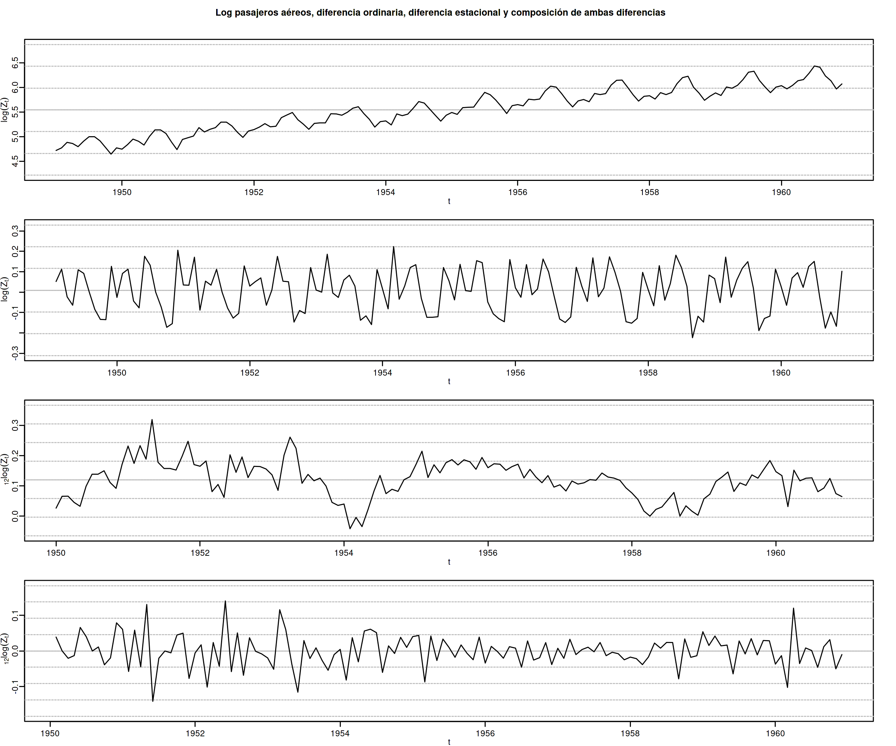
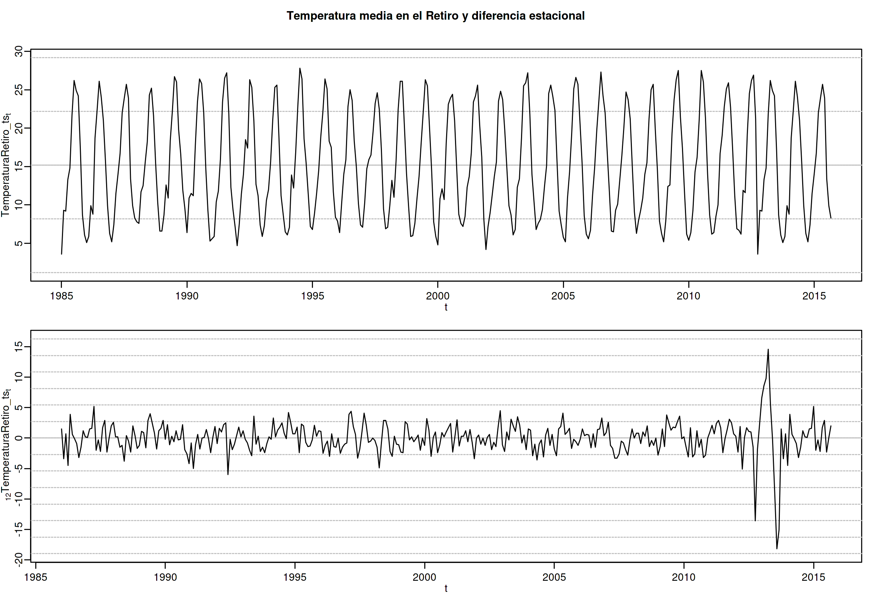

Econometría Aplicada. Lección 6
Table of Contents
En esta lección veremos algunas herramientas estadísticas.
y usaré la librería tfarima de
José Luis Gallego siempre que pueda.
Carga de algunas librerías de R
Primero cargamos la librería tfarima (Repositorio Cran:
https://cran.r-project.org/web/packages/tfarima/index.html;
repositorio GitHub: https://github.com/gallegoj/tfarima)
library(tfarima) # librería de José Luis Gallego para Time Series library(readr) # para leer ficheros CSV library(ggplot2) # para el scatterplot (alternaticamente library(tidyverse)) library(ggfortify) # para pintar series temporales library(jtools) # para representación resultados estimación library(zoo) # para generar objetos ts (time series)
y además fijamos los parámetros por defecto para las figuras en png
del notebook
# fijamos el tamaño de las figuras que se generan en el notebook options(repr.plot.width = 12, repr.plot.height = 4, repr.plot.res = 200)
1. Función de autocovarianzas y función de autocorrelación (ACF)
Ya hemos visto que si un proceso estocásticos es estacionario, la covarianza entre \(X_t\) y \(X_{t+k}\) no depende de \(t\); tan solo depende de la distancia temporal \(k\) entre ambas variables y que
- La secuencia \(\boldsymbol{\gamma}=(\gamma_k\mid k\in\mathbb{Z})\) se denomina función de autocovarianzas
La secuencia \(\boldsymbol{\rho}=(\rho_k\mid k\in\mathbb{Z})\) donde \[\rho_k=\frac{Cov(X_t,X_{t-k})}{\sqrt{Var(X_t)Var(X_{t-k})}}=\frac{\gamma_k}{\gamma_0} \]
se denomina función de autocorrelación (ACF).
Veamos otra secuencia que también describe la relación entre distintas variables del proceso.
2. Función de autocorrelación parcial (PACF)
La correlación parcial entre dos variables \(X_t\) y \(X_{t-k}\) de un proceso estacionario \(\boldsymbol{X}\) mide su correlación una vez descontado el efecto de las variables \(X_{t-1},\ldots X_{t-(k-1)}\) que median entre ambas. \[X_t,\ \overbrace{X_{t-1},\ldots X_{t-(k-1)},}\ X_{t-k}\]
Si denotamos con \(\widehat{X_t}\) y \(\widehat{X_{t-k}}\) los ajustes de las respectivas regresiones de \(X_t\) y \(X_{t-k}\) sobre \(X_{t-1},\ldots X_{t-(k-1)};\;\) la correlación parcial entre \(X_t\) y \(X_{t+k}\) es la correlación entre los residuos de sendas regresiones: \[Coor\Big((X_t-\widehat{X_t}),\ (X_{t-k}-\widehat{X_{t-k}})\Big)\]
En un proceso débilmente estacionario las correlaciones parciales solo dependen de la distancia \(k\), lo que permite definir la siguiente secuencia.
Función de autocorrelación parcial (PACF) de un proceso estacionario \(\boldsymbol{X}\) es la siguiente secuencia \(\boldsymbol{\pi}=(\pi_k\mid k\in\mathbb{Z}),\;\) que es simétrica pues \(\pi_{-k}=\pi_k\): \[\begin{cases} \pi_0 &=1\\\\ \pi_1 &=Corr(X_t,\ X_{t-1})=\rho_1=\frac{\gamma_1}{\gamma_0}\\\\ \pi_k &=Corr\Big((X_t-\widehat{X_t}),\ (X_{t-k}-\widehat{X_{t-k}})\Big) \end{cases},\] donde \(\widehat{X_t}\) y \(\widehat{X_{t-k}}\) son los ajustes de las respectivas regresiones de \(X_t\) y \(X_{t-k}\) sobre \(X_{t-1},\ldots X_{t-(k-1)}\).
La magnitud de la correlación parcial \(\;\pi_k\;\) refleja la mejora en la predicción de \(\widehat{X_t}\) si en lugar de usar una combinación lineal con solo los \(k-1\) primeros retardos, \(\widehat{X_t}=\widehat{\alpha_0}+\sum_{j=1}^{k-1}\widehat{\alpha_j} X_{t-j}\), empleáramos \(k\) retardos (i.e., un retardo más).
Hay una correspondencia uno-a-uno entre la función de autocovarianzas \(\boldsymbol{\gamma}\) y la PACF \(\boldsymbol{\pi}\).
Es decir, es posible reconstruir una de las secuencias a partir de la otra (por ejemplo resolviendo la ecuaciones de Yule-Walker recursivamente con el algoritmo Levinson-Durbin; véase Pourahmadi, M. (2001, Capítulo 7) o Brockwell & Davis (1991, Capitulo 5))
\(\pi_1=\phi_{11}=\rho_1\)
\(\pi_{k+1}=\phi_{k+1,k+1}=\frac{\rho_{k+1}-\sum_{j=1}^k\phi_{kj}\rho_{k+1-j}}{1-\sum_{j=1}^k\phi_{kj}\rho_j}\); donde \(\phi_{k+1,j}=\phi_{kj}-\phi_{k+1,k+1}\phi_{k,k+1-j}\), \(j=1:k\)
Consecuentemente, la PACF \(\boldsymbol{\pi}\) puede verse como una reparametrización de la función de autocovarianzas \(\boldsymbol{\gamma}\).
Veamos otra transformación de \(\boldsymbol{\gamma}\) que también arrojará luz sobre las propiedades de un proceso estocástico.
3. Densidad espectral
Para un proceso estocástico \(\boldsymbol{X}\) con función de autocovarianzas \(\boldsymbol{\gamma}\in\ell^1\), es decir, con función de autocovarianzas absolutamente sumable, \[\sum_{h\in\mathbb{Z}}|\gamma_h|<\infty,\] entonces definimos la densidad espectral de \(\boldsymbol{X}\) como \[f(\omega) \quad=\quad\frac{1}{2\pi}\sum_{h\in\mathbb{Z}}\gamma_h e^{-i h\omega} \quad=\quad\frac{1}{2\pi}\sum_{h\geq0}\gamma_h \cos(h\omega),\qquad \omega\in[-\pi,\pi].\]
La densidad espectral \(f(\omega)\) satisface las siguientes propiedades:
- \(f(\omega)=f(-\omega)\)
- \(f(\omega)\geq0\)
- \(\int_{-\pi}^\pi f(\omega)d\omega<\infty\)
Es más, desde la densidad espectral se pueden calcular las covarianzas \[\gamma_h=\int_{-\pi}^\pi f(\omega)e^{-i h\omega}d\omega;\quad h\in\mathbb{Z}\]
Consecuentemente, para \(h=0\) \[\sigma^2=\gamma_0=\int_{-\pi}^\pi f(\omega)d\omega.\]
Por tanto podemos interpretar la densidad espectral como una descomposición de la varianza en distintas frecuencias.
La ACF, la PACF y la densidad espectral son funciones que solo dependen de los dos primeros momentos de la distribución.
Su estimación y posterior análisis son la herramienta fundamental para elegir un modelo ARMA para una serie temporal ``estacionaria''.
Para entenderlo debemos ver cómo son estas funciones en algunos modelos lineales concretos.
4. ACF, PACF y densidad espectral de algunos modelos lineales
4.1. ACF de procesos lineales
Sea el proceso lineal \(\boldsymbol{X}=\boldsymbol{\varphi}*\boldsymbol{U}\), donde \(\;\boldsymbol{U}\sim WN(0,\sigma^2)\;\) y \(\;\boldsymbol{\varphi}\in\ell^1;\;\) es decir \[X_t=\sum_{j\in\mathbb{Z}}\varphi_j U_{t-j}.\] Puesto que \(E(U_t)=0\) para todo \(t\in\mathbb{Z}\), entonces \[E(X_t)=E\left(\sum_{j\in\mathbb{Z}}\varphi_j U_{t-j}\right)=\sum_{j\in\mathbb{Z}}\varphi_j E(U_{t-j})=0\] Y como además, \(E(U_j\cdot U_k)=0\) cuando \(j\ne k\), su función de autocovarianzas es
\begin{eqnarray*} \gamma_{k,t}= E\big[X_t\cdot X_{t-k}\big]=& E\left[\Big(\sum_{j\in\mathbb{Z}}\varphi_j U_{t-j}\Big)\Big(\sum_{j\in\mathbb{Z}}\varphi_j U_{t-k-j}\Big)\right]= \sigma^2\sum_{j\in\mathbb{Z}}\varphi_{j+k}\cdot\varphi_{j}\\ =&\sigma^2\sum_{j\in\mathbb{Z}}\varphi_{j+k}\cdot R(\varphi_{-j}) = \sigma^2\left(\boldsymbol{\varphi}(z)*\boldsymbol{\varphi}(z^{-1})\right)_k \end{eqnarray*}que solo depende de \(k\) (el proceso es estacionario como ya sabíamos).
4.2. Proceso de Ruido Blanco
Sea \(\boldsymbol{X}=\boldsymbol{1}*\boldsymbol{U}\), donde \(\;\boldsymbol{U}\sim WN(0,\sigma^2)\;;\) es decir \(X_t=U_t\) para \(t\in\mathbb{Z}\). Entonces
- \(\boldsymbol{\gamma} \;=\; \sigma^2 \boldsymbol{1}(z)*\boldsymbol{1}(z^{-1}) \;=\; \sigma^2\boldsymbol{1} \;=\; (\ldots,0,0,\sigma^2,0,0,\ldots) \;=\; \sigma^2 z^0\)
- \(\boldsymbol{\rho} \;=\; \frac{1}{\gamma_0}\boldsymbol{\gamma} \;=\; \frac{1}{\sigma^2}\boldsymbol{\gamma} \;=\; \boldsymbol{1} \;=\; (\ldots,0,0,1,0,0,\ldots) \;=\; 1 z^0\)
- \(\boldsymbol{\pi} \;=\; \boldsymbol{1} \;=\; (\ldots,0,0,1,0,0,\ldots) \;=\; 1 z^0\)
- \(f(\omega) \;=\; \frac{1}{2\pi}\sum_{h\geq0}\gamma_h \cos(h\omega) \;=\; \frac{\sigma^2}{2\pi} \cos(0\omega) \;=\; \frac{\sigma^2}{2\pi};\quad \omega\in[-\pi,\pi]\)
options(repr.plot.width = 12, repr.plot.height = 2, repr.plot.res = 200) wn <- um(ar = "(1 - 0B)") display(list(ar0p), lag.max = 20, byrow = TRUE)

options(repr.plot.width = 12, repr.plot.height = 5, repr.plot.res = 200) ide(sim(wn, n = 400), lag.max = 20, graphs = c("plot", "acf", "pacf", "pgram"), main="Ruido blanco")

4.3. Media móvil MA(\(q\))
Sea \(\boldsymbol{X}=\boldsymbol{\theta}*\boldsymbol{U}\), con \(\;\boldsymbol{U}\sim WN(0,\sigma^2)\;\) y donde \(\boldsymbol{\theta}\) es un polinomio de orden \(q\) con \(\theta_0=1\), es decir \[X_t= \sum_{j=1}^q\theta_j U_{t-j}+U_t.\]
- \(\boldsymbol{\gamma} \;=\; \sigma^2 \boldsymbol{\theta}(z)*\boldsymbol{\theta}(z^{-1}) \;=\; \sigma^2 \sum\limits_{j,k=0}^q \theta_j\theta_k z^{j-k}\)
- \(\boldsymbol{\rho} \;=\; \frac{1}{\gamma_0}\boldsymbol{\gamma}\)
- \(\boldsymbol{\pi}\) tiene una expresión más complicada, pero su magnitud decae paulatinamente
- \(f(\omega) \;=\; \frac{\sigma^2}{2\pi}\boldsymbol{\theta}(e^{-i\omega})*\boldsymbol{\theta}(e^{i\omega}) \;=\; \frac{1}{2\pi}\sum\limits_{h=0}^q \gamma_h \cos(h\omega);\quad \omega\in[-\pi,\pi]\)
4.4. Media móvil MA(\(1\))
Sea \(\boldsymbol{X}=(1+\theta z)*\boldsymbol{U}\), con \(\;\boldsymbol{U}\sim WN(0,\sigma^2)\;\), es decir \(X_t=U_t+\theta U_{t-1}\).
- \(\boldsymbol{\gamma} \;=\; \sigma^2 (1+\theta z)*(1+\theta z^{-1}) \;=\; \sigma^2 (\ldots,\ 0\ ,\ -\theta,\ (1+\theta^2),\ -\theta,\ 0,\ \ldots)\)
- \(\boldsymbol{\rho} \;=\; \frac{1}{\gamma_0}\boldsymbol{\gamma} \;=\; \frac{1}{1+\theta^2}\boldsymbol{\gamma}\)
- \(\boldsymbol{\pi} \;=\; \sum\limits_{k\in\mathbb{Z}}{ \frac{-\theta^k(1-\theta^2)}{1-\theta^{2(k+1)}} z^k}\)
- \(f(\omega) \;=\; \frac{\sigma^2}{2\pi}\boldsymbol{\theta}(e^{-i\omega})*\boldsymbol{\theta}(e^{i\omega}) \;=\; \frac{\sigma^2}{2\pi}\left((1+\theta^2)-\theta\cos(\omega)\right);\quad \omega\in[-\pi,\pi]\)
options(repr.plot.width = 12, repr.plot.height = 2, repr.plot.res = 200) ma1p <- um(ma = "(1 + 0.9B)") display(list(ma1p), lag.max = 20, byrow = TRUE)
\[\boldsymbol{\theta}(z)=1+0.9z\quad\Rightarrow\quad X_t= (1+0.9 \mathsf{B})U_t.\]

options(repr.plot.width = 12, repr.plot.height = 5, repr.plot.res = 200) ide(sim(ma1p, n = 400), lag.max = 20, graphs = c("plot", "acf", "pacf", "pgram"), main="MA(1)")

options(repr.plot.width = 12, repr.plot.height = 2, repr.plot.res = 200) ma1n <- um(ma = "(1 - 0.9B)") display(list(ma1n), lag.max = 20, byrow = TRUE)
\[\boldsymbol{\theta}(z)=1-0.9z\quad\Rightarrow\quad X_t= (1-0.9 \mathsf{B})U_t.\]

options(repr.plot.width = 12, repr.plot.height = 5, repr.plot.res = 200) ide(sim(ma1n, n = 400), lag.max = 20, graphs = c("plot", "acf", "pacf", "pgram"), main="MA(1)")

4.5. AR(1)
ar0p <- um(ar = "(1 - 0B)") ar1p <- um(ar = "(1 - 0.9B)") ar1n <- um(ar = "(1 + 0.9B)") ma1p <- um(ma = "(1 - 0.9B)") ma1n <- um(ma = "(1 + 0.9B)") ar2c <- um(ar = "(1 - 1.52B + 0.8B^2)") #display(list(ar1p, ar1n, ma1p, ma1n, ar2c), lag.max = 20) display(list(ar0p), lag.max = 20)
5. La especificación del modelo se escoge según las características de los datos.
¿Es la serie
- "estacionaria en media"
- (y si lo es, ¿cuál es su media?)
- (y si no lo es, ¿cómo cambia o evoluciona su media?)
- "estacionaria en varianza" (homocedástica)
- (y si lo es, ¿cuál es su varianza?)
- (y si es heterocedástica, ¿cómo cambia o evoluciona su varianza?)?
¿Están sus valores correlados con su historia pasada (autocorrelados)?
¿Están correlados con los valores presentes o pasados de otras series?
Veamos algunas herramientas estadísticas para poder desvelar estas características.
6. Herramientas para desvelar propiedades de una serie temporal
6.1. Análisis gráfico
6.1.1. Gráfico de la serie temporal
Representa sus valores en el eje vertical (\(y\)) frente a una escala temporal en el horizontal (\(x\)). Es útil para detectar visualmente:
- tendencias y/o estacionalidad
- cambios de variabilidad
- valores atípicos (outliers)
- el 95% aprox. de una muestra de valores generados por una distribución normal debería estar comprendido entre \(\mu\pm2\sigma\)
la probabilidad de que una variable normal genere un valor fuera de las bandas de \(\mu\pm3\sigma\) es \(0.0023\)
{kind=link}
En es importante escalar y rotular adecuadamente los ejes y asegurar la comparabilidad entre series y gráficos distintos (si los hubiere).
6.1.2. Gráfico rango-media
Cambios de variabilidad de una serie pueden evidenciarse en su gráfico temporal.
Pero también suelen verse bien en un gráfico rango-media, donde se representa:
- en el eje \(x\)
- un indicador del nivel de la serie calculado para distintas submuestras no solapadas (normalmente la media).
- en el eje \(y\)
- un indicador de la dispersión de la serie calculado para las mismas submuestras (normalmente el rango.)
Veamos el gráfico de la serie de pasajeros de líneas aéreas junto a su gráfico de rango media:
Z <- AirPassengers ide(Z, graphs = c("plot", "rm"), main="Pasajeros de líneas (aéreas en miles) y gráfico rango-media")

El gráfico de rango media a veces se acompaña de una regresión de la dispersión sobre los niveles para medir la relación nivel-dispersión.
6.2. Determinación del orden de integración
Decidir adecuadamente el orden de integración es crucial en el análisis de series temporales.
Las herramientas utilizadas para tomar la decisión son
- el análisis gráfico
- los contrastes formales
6.2.1. Análisis gráfico
options(repr.plot.width = 12, repr.plot.height = 8, repr.plot.res = 200) ide(PoblacionAustralia_ts, graphs = c("plot"), transf = list(list(bc = F), list(bc = F, d = 1), list(bc = F, d = 2)), main="Población australiana, primera diferencia y segunda diferencia" )

La serie de población \(\boldsymbol{y}\) tiene una clara tendencia creciente (primer gráfico), que desaparece al tomar una diferencia ordinaria, \[\nabla\boldsymbol{y}=(1-\mathsf{B})*\boldsymbol{y}\] (segundo gráfico). Bastar con tomar una primera diferencia de la serie de población para obtener una nueva serie que se asemeja a la realización de un proceso estacionario.
No obstante, ¿qué pasa si tomamos una segunda diferencia ordinaria? \[\nabla\nabla\boldsymbol{y}=\nabla^2\boldsymbol{y}=(1-\mathsf{B})^2*\boldsymbol{y}\] (segundo gráfico). Pues que la serie obtenida también es estacionaria, pero ojo, es un grave error tomar más diferencias de las necesarias al modelizar los datos. Se debe tomar el mínimo número de transformaciones que arrojen una serie ``estacionaria'' (recuerde que decir que una serie temporal es estacionaria es un abuso del lenguaje).
options(repr.plot.width = 12, repr.plot.height = 10, repr.plot.res = 200) ide(Z, graphs = c("plot"), transf = list(list(bc=T), list(bc=T, d=1), list(bc=T, D=1), list(bc=T, D=1, d=1)), main = "Log pasajeros aéreos, diferencia ordinaria, diferencia estacional y composición de ambas diferencias" )

Como ya vimos, la serie pasajeros en logaritmos tiene tendencia y estacionalidad muy evidentes. No basta con tomar solo una diferencia ordinaria \[\nabla\boldsymbol{y}=(1-\mathsf{B})*\boldsymbol{y};\] pues el resultado muestra una pauta estacional. Ni tampoco basta con tomar solo una diferencia estacional \[\nabla_{12}(\boldsymbol{y})=(1-\mathsf{B^{12}})*\boldsymbol{y};\] pues resulta una serie que ``deambula'', i.e., que no es ``estacionaria'' en media.
Tomar una diferencia ordinaria y otra estacional \[\nabla\nabla_{12}(\boldsymbol{y})=(1-\mathsf{B})*(1-\mathsf{B^{12}})*\boldsymbol{y}\] arroja una serie que sí parece ser ``estacionaria''.
options(repr.plot.width = 12, repr.plot.height = 8, repr.plot.res = 200) TemperaturaRetiro_ts=ts(read.csv("datos/Retiro.txt"),start=c(1985, 1), end=c(2015,9), frequency=12) ide(TemperaturaRetiro_ts, graphs = c("plot"), transf = list(list(), list(D = 1)), main="Temperatura media en el Retiro y diferencia estacional" )

En el caso de la serie de temperaturas en el Parque del Retiro, parece que es suficiente con tomar solo una diferencia estacional.
6.2.2. Contrastes formales sobre el orden de integración
- Test de Dickey-Fuller (DF)
- \(H_0\)
- la serie es \(I(1)\)
- \(H_1\)
- la serie es \(I(0)\).
Consideremos el modelo \[y_{t}=\rho y_{t-1}+u_{t},\] donde \(y_{t}\) es la variable de interés, \(\rho\) es un coeficiente, y \(u_{t}\) es un proceso de ruido blanco. Una raíz unitaria estará presente si \(\rho =1\). En tal caso el modelo será no-estacionario.
El modelo de regresión se puede escribir como
\[\nabla y_{t}=(\rho -1)y_{t-1}+u_{t}=\delta y_{t-1}+u_{t}\]
- Test de Dickey-Fuller aumentado (ADF)
7. Otras herramientas estadísticas CómoHacerConR
7.1. Estadísticos descriptivos
library(pastecs) # resumen estadísticos descriptivos # https://cran.r-project.org/web/packages/pastecs/index.html (stat.desc) library(knitr) # presentación de tabla resumen # https://cran.r-project.org/web/packages/knitr/index.html (kable) # https://bookdown.org/yihui/rmarkdown-cookbook/kable.html # estadísticos principales y test de normalidad kable(stat.desc(Z, basic=FALSE, norm=TRUE), 'rst')
============ ============= \ x ============ ============= median 265.5000000 mean 280.2986111 SE.mean 9.9971931 CI.mean.0.95 19.7613736 var 14391.9172009 std.dev 119.9663169 coef.var 0.4279947 skewness 0.5710676 skew.2SE 1.4132515 kurtosis -0.4298441 kurt.2SE -0.5353818 normtest.W 0.9519577 normtest.p 0.0000683 ============ =============
7.2. Test de normalidad Jarque-Vera
Podemos calcularlo con la librería momments:
#install.packages("moments") library(moments) # Perform the Jarque-Bera test jb_test <- jarque.test(as.numeric(Z)) # Print the test result print(jb_test)
Jarque-Bera Normality Test data: as.numeric(Z) JB = 8.9225, p-value = 0.01155 alternative hypothesis: greater
Otra librería alternativa para calcularlo: tseries
library(tseries) # Perform the Jarque-Bera test jb_test <- jarque.bera.test(Z) # Print the test result print(jb_test)
Jarque Bera Test data: Z X-squared = 8.9225, df = 2, p-value = 0.01155